東亞旅遊景點簡介
日本旅遊
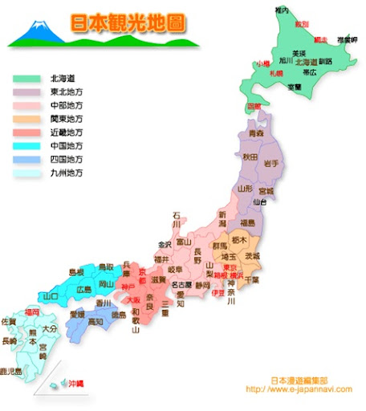
地理概況：
- 日本是一個由4個主要島嶼組成的島國,位於亞洲東北部。
- 主要島嶼包括北海道、本州、四國和九州。
- 國土面積約37.8萬平方公里,是世界第61大國家。
文化特色：
- 日本擁有悠久的歷史和獨特的傳統文化,如武士道精神、茶道、書道等。
- 日本是佛教、神道教和儒教的重要發源地,這些宗教在日本文化中扮演重要角色。
- 日本的飲食文化也非常著名,包括壽司、拉麵、天婦羅等。
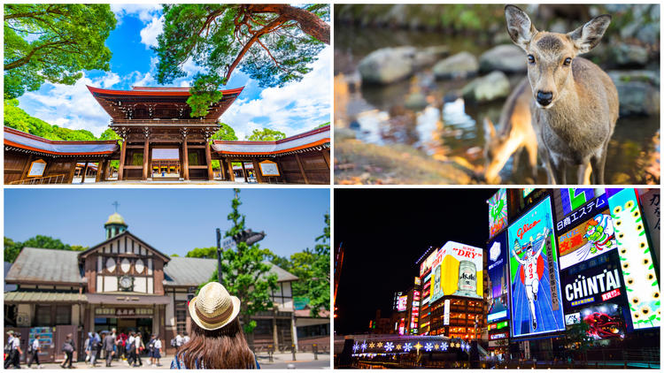
主要旅遊景點：
- 東京：日本首都,擁有許多知名景點如淺草寺、皇居、新宿等。
- 京都：曾是日本古都,保留了許多古老的寺廟和神社,如金閣寺、銀閣寺等。
- 大阪：著名的商業和美食中心,有道頓堀、通天閣等。
- 北海道：自然風光秀麗,擁有美麗的湖泊和火山。
- 沖繩：擁有世界級的海灘和珊瑚礁,是著名度假勝地。
交通方便：
- 日本擁有發達的鐵路系統,包括高速新幹線等。
- 國內航空網絡也相當完善,可以快速往返各大城市。
- 自駕遊也是不錯的選擇,路網發達,開車非常方便。
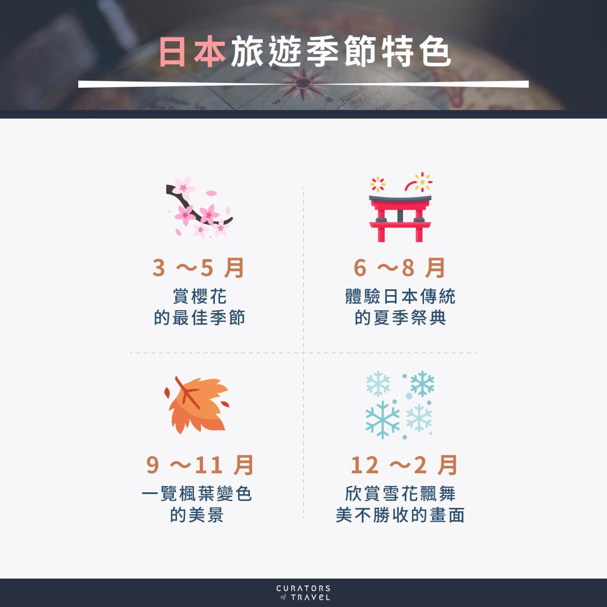
旅遊建議：
- 最佳旅遊季節為春季(賞櫻花)和秋季(賞楓葉)。
- 遊覽日本時建議提前做好功課,提前預訂飯店和交通。
- 多利用當地交通工具,如地鐵、公車等,可以更好地體驗日本文化。
台灣旅遊
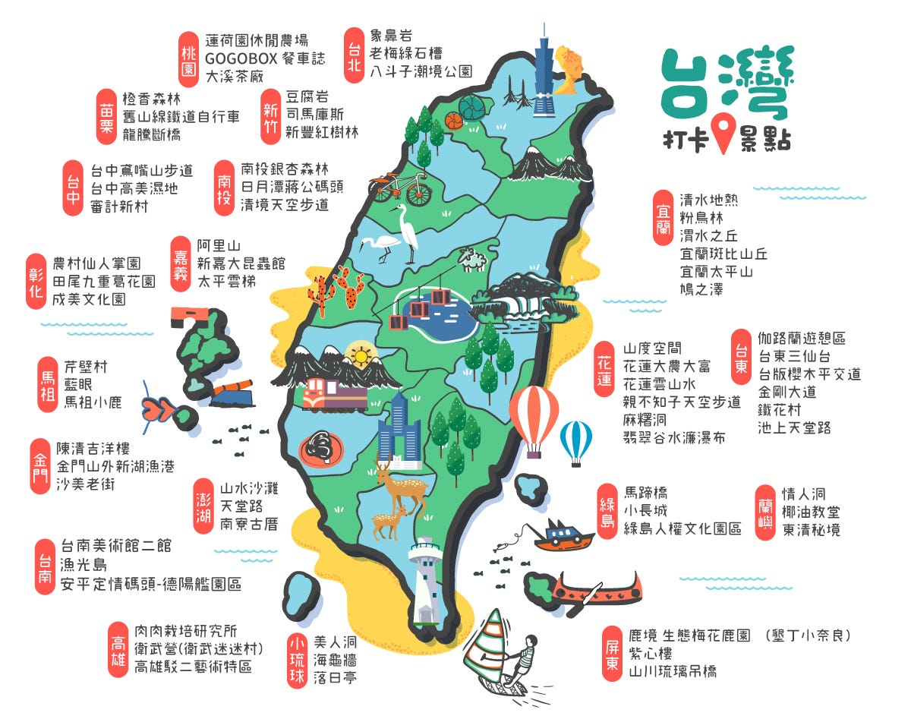
地理概況：
- 台灣是一個島嶼國家,位於亞洲東南部,鄰近中國大陸、日本和菲律賓。
- 全島面積約為36,193平方公里,是世界第38大島嶼。
- 台灣地形複雜多樣,有高山、丘陵、平原和海岸線等。
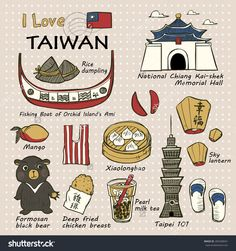
文化特色：
- 台灣受到中國、日本和原住民文化的影響,形成了獨特的多元文化。
- 台灣人重視家庭觀念、尊重長輩,保留了許多中華傳統文化。
- 台灣在飲食、建築、工藝品等方面也有自己的特色。
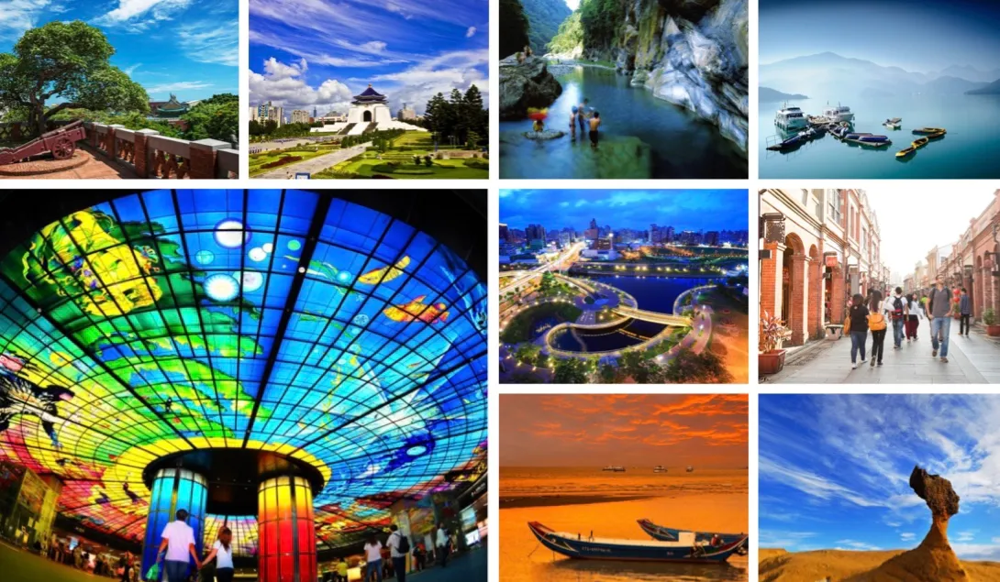
主要旅遊景點：
- 臺北:作為首都,擁有故宮博物院、士林夜市等知名景點。
- 九份:位於北部山區,保留了老街與懷舊風情。
- 日月潭:美麗的高山湖泊,是台灣最著名的湖泊之一。
- 阿里山:有著壯麗的山景和神奇的雲海景觀。
- 墾丁:南台灣著名的海濱度假勝地,擁有優美的海灘。
交通便捷：
- 台灣擁有完善的公路網和高速鐵路系統,交通非常方便。
- 內島航線也發達,可以快速往返各地。
- 自駕遊是非常好的選擇,可以自由探索各地風光。
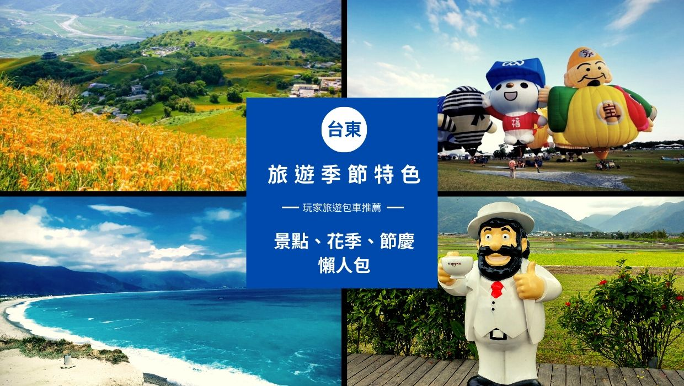
旅遊建議：
- 最佳旅遊季節為春季(賞櫻花)和秋季(賞楓葉)。
- 提前做好行程規劃,提前預訂住宿和交通非常重要。
- 多利用當地的地鐵、公車和高鐵系統,可以更好地體驗當地文化。
韓國旅遊
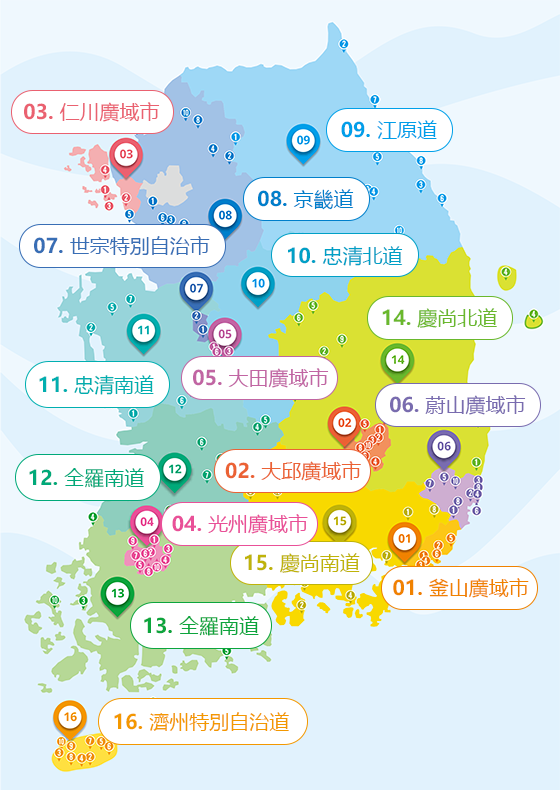
地理概況：
- 韓國位於朝鮮半島南部,與中國和日本相鄰。
- 全國國土面積約10萬平方公里,包括韓半島主體及四周島嶼。
- 韓國地形以山地為主,海岸線曲折,島嶼眾多。
文化特色：
- 韓國有悠久的歷史文化,保留了許多古老的建築物和遺產。
- 韓流文化(韓國流行文化)近年在全球興起,如韓劇、K-pop等。
- 韓國飲食文化也非常著名,如韓式烤肉、泡菜、韓式炒飯等。
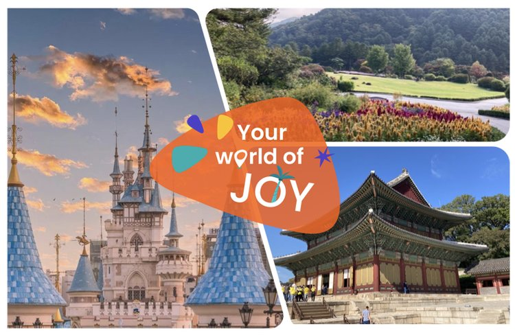
主要旅遊景點：
- 首爾:作為首都,擁有眾多著名景點如景福宮、南山塔等。
- 慶州:古都韓國,擁有豐富的歷史文化遺產。
- 釜山:港口城市,有海雲台海灘、札嘎其市場等。
- 濟州島:著名度假勝地,有獨特的火山和自然景觀。
- 仁川:近首爾的港口城市,可參觀百年歷史的開港遺址。
交通便利：
- 韓國擁有高速鐵路KTX,可以快速往返各大城市。
- 地鐵和公共汽車網路發達,是主要的城市交通工具。
- 租車自駕也是不錯的選擇,可以深入探索韓國各地。
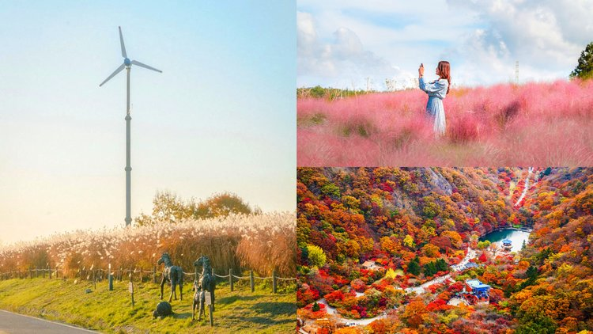
旅遊建議：
- 春季和秋季為最佳旅遊季節,可欣賞韓國的美麗景致。
- 提前做好計畫和預訂,可以更好地規劃行程。
- 多利用韓國特色的交通工具,可以更好地了解當地文化。
中國旅遊
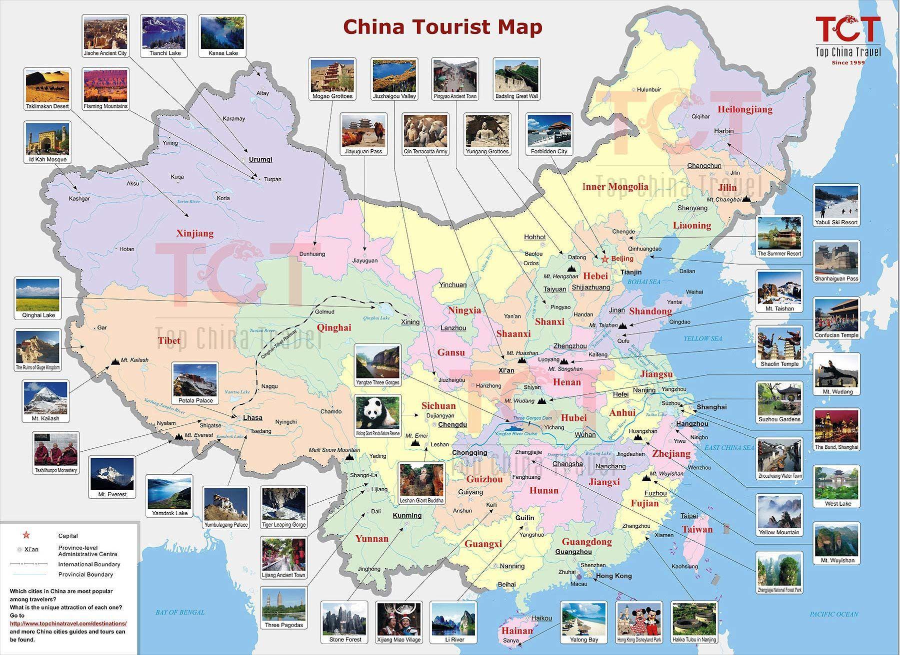
地理概況：
- 中國幅員遼闊,是世界上面積第三大的國家。
- 地形複雜多樣,包括高原、山地、盆地、平原等。
- 自然景觀極為豐富,擁有大量世界著名的自然遺產。
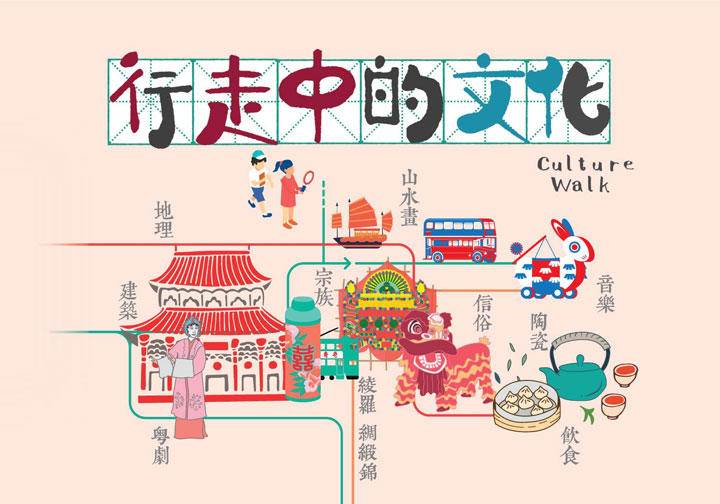
文化特色：
- 中國擁有悠久的歷史文明,是世界四大古老文明之一。
- 傳統文化深厚,涵蓋哲學、藝術、建築、飲食等多個領域。
- 現代文化與傳統文化交融,形成多元文化特色。
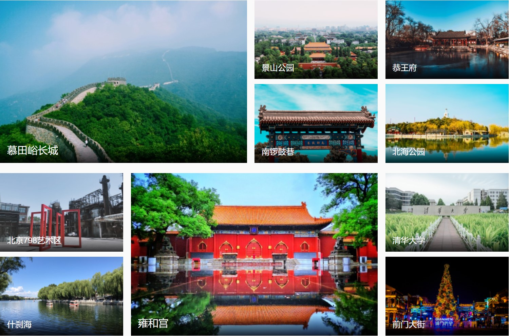
主要旅遊景點：
- 北京:首都,擁有天安門、紫禁城、長城等著名景點。
- 西安:古都,有兵馬俑、大雁塔等重要歷史遺產。
- 上海:現代化大都市,外灘、東方明珠塔等景點聞名。
- 四川:擁有美麗的自然風光,如九寨溝、黃龍等。
- 桂林:山水秀美,漓江、陽朔等景點廣受喜愛。
交通便利：
- 高鐵網路發達，是主要的城際交通工具。
- 航空網路完善，可抵達各地。
- 公共交通工具種類多樣，包括地鐵、公交等。
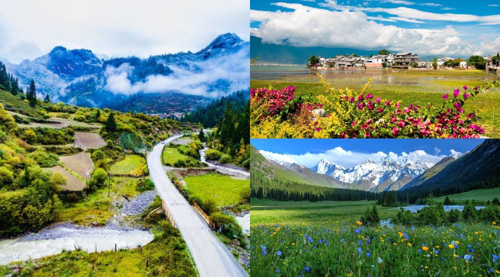
旅遊建議：
- 春季和秋季為最佳旅遊季節，氣候宜人。
- 提前做好計畫和預訂，可有效節省時間和費用。
- 保持開放的心態，體驗不同地區的獨特文化。